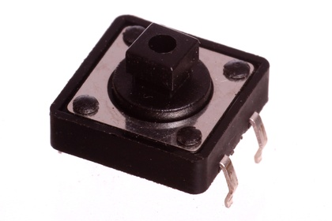
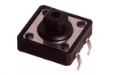
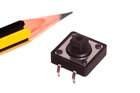
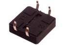

12 mm Pushbutton (Tactile) - BT12

Summary
Name: 12 mm Pushbutton (Tactile)
ID: BUTA-12-X-STAN-01
Hex ID: BT12
WebPage: https://github.com/oomlout/oomlout-OOMP/wiki/BUTA-12-X-STAN-01
Short URL: http://oom.lt/BT12
Revision History: https://github.com/oomlout/oomlout-OOMP/blob/master/parts/BUTA-12-X-STAN-01/
| Type |
Size |
Color |
Description |
Index |
BUTA
Pushbutton (Tactile) |
12
12 mm |
X
|
STAN
|
01
|
Images



About
A good tactile pushbutton. Useful when something larger than the standard 6mm version is desired. These also have better pin spacing for using in a breadboard.
Common Uses
This part is commonly used as:
*a reset button for a microcontroller.
*a button on a keypad.
*a larger button to distinguish it from more standard pushbuttons.
Specifications
| Info |
Value |
| Type |
Pushbutton (Tactile) |
| Size |
12 mm |
Extra Details
Spotted a mistake, want to add more? Let us know oomp@oomlout.com
All images and resources are licensed [CC BY-SA] unless otherwise stated (ie. the datasheets)